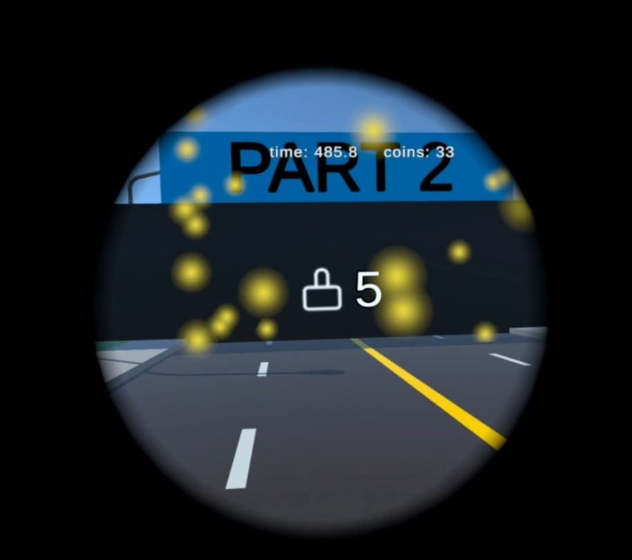

This is my report for my university project for the course Interaction in Virtual and Augmented Reality.
Motivation
We have been given an existing VR project. In this virtual environment exists a race track through a city. Along the way are collectable coins. The race track is structured in three different areas. Shortly before a new area, a task has to be done, at which a T-shaped object has to be selected, rotated and moved in the second T-shaped object. Ideally, those two T-objects are then exactly at the same position with the same rotation, so that you can't distingish them anymore.
We had the following tasks:
- Implement a locomotion method
- Implement a method that allows selection, moving and rotation of the T-objects
- Implement something that reduces cyber-sickness
- Design and execute a study to evalute the results
Initial Implementation Idea
My initial idea was to implement some flying. Either some Ironman-like flying locomotion where you put your open hands down horizontally and it applies some upwards force and some force in the direction of where you are looking. Or some Superman-like flying where you have some power-pose that let you fly in the direction of your strechted arm, both horizontal and vertical.
For the interaction task, I wanted to stay in this superhero-themed setting and either use some Ironman-like energy beams that attach to the T-object on the first hit and then rotates and moves with your hand. Or effectively the same thing with some Spiderman webs.
For the cyber-sickness reduction, I planned to implement a tunnling vignette.
Technical Details and Actual Implementation
General
The implementation is build with Unity and requires a Meta Quest 2 headset to run.
The original implementation used Unity 2021.3.10f1 and the Oculus Integration 46.0 package. Over the timespan of my development, I first updated to the latest Unity patch version and later performed an upgrade to Unity 2022.3.19f1. First of all, I wanted to be able to use all currently existing engine features and packages, that only work with newer Unity versions, and secondly, even more important, I also had another university project at the same time, that was also implemented in this Unity version. I did not want to learn and work with two different Unity version simultaneously, particular as I keep getting the impression, that Unity is changing things regularly in a backwards incompatible way.
Upgrading Unity to the 2022.3 LTS version also forced me to migrate from the now legacy Oculus integration, that was directly available from the Unity package registry, to the new Meta SDKs, that are either available from the Unity Asset Store or directly via Meta's npm registry. (Side note: The Unity package manager builds upon npm. Therefore other npm registries can be added and then directly used inside the Unity Editor's package manager.) I first went with the Asset Store version as I was already used to its integration workflow as I am also using other assets from there, but I had to switch to Meta's npm registry later on, when I added continuous integration (CI) and continuous delivery (CD) to my git repository, since the Asset Store always requires authentication with an Unity account, even for free assets, and my CI system does not support this for the Asset Store at the moment.
As part of the modernization of Meta's integration I also switched from the existing, standard game objects that have Meta scripts attached, to Meta SDKs' building blocks.
Unity itself has several official packages for XR development. I experimented around with several of them, but ultimately do not use them in my final state of the project. Those XR packages do not seem to be compatible with Meta SDKs, therefore would have required me to re-implement everything and re-learn a lot. For this, the time was to limited. However, I have the impression that Unity's XR packages are probably a solid choice for any new project, for several reason:
- They work with a wider range of XR hardware, not just Meta hardware.
- They come with a lot of ready-to-use functionality for interactions, locomotions and cyber-sickness reduction methods I would have been interested in, that in part do not exist at all or in that specific way in the Meta SDKs.
- My subjective, perhabs misleading, impression is also, that there seems to be an overall trend towards those Unity packages. I oftentimes found more up-to-date information how to do X, Y, Z with those integrations, but had a much harder time to find the same information for the Meta SDKs.
At the end, I also enabled Meta Quest 3 as a build target, however, this is completely untested and my project might not work at all with Quest 3 hardware.
Game-Loop Logic
I made several changes and enhancements to the game loop logic. As my study design has the task to get as many rounds done in 10 minutes as possible I had to change the logic that previously ended the parkour after a single round. Now, the logic resets everything so that an endless amount of rounds are doable within the time limit. All coins, even previously collected ones, do re-spawn.
Originally, the interaction task was completely ignoreable as people could just walk (or fly) past it. I added a road blockade until all 5 T-objects for each area are done. The blockade also displays the number of objects that have yet to be positioned. Furthermore, when the appearance of the task is triggerd, all locomotion techniques are disabled for the duration of the task, preventing all escape attempts.
I also changed many implementation details, including the logging for the study data.
Locomotion
I kept the original idea of enabling the player to fly, but eventually gave up on trying to implement a flying methode that feels "natural". "Natural" meaning, that there is some mechanism that adds some amount of vertical force on the player and the player only slows down through gravity, crashing into another object or through some kind of break mechanism.
Getting the physics right for a scenario, where players have to constantly and quickly change directions is hard. I went through many interations of differnt kinds of force-logic, some can be found in my git history, many others did not even make it so far. Most of them were really hard to control from a player perspective or caused very strong cyber-sickerness symptoms.
In one of those intermediate interactions, I had added a flying force by pressing the right trigger button. The player would than naturally fall down with gravity again. I eventually figured our physics numbers that made it controllable rather well, but I did not want this to be the final flying methode, as it did not feel creative and innovative enough. It is still possible to turn this control on in my final solution, but it is off by default and can only be changed before a build, not during runtime.
In another one of those intermediate interations, I experimented with using the body height of the player to control the flying height, or to be more preceise, the height of the headset in relation to the floor height. Standing straight would mean having the maximum flying height, getting closer to a pre-determined min-height would bring down the player more and more. The max and min height needs to be determined before the game begins in order for such a logic to work. For the max work to be correct, the game has to be sure that the player is standing straight at the point of taking this value. And a min value has to be recorded in a moment the player is aware of too. One might think, that the floor can be taken as such a point, but that wouldn't be good either:
- It would be a terrible idea that the player have to bring their head completely down on the floor to reach the min flying height.
- Different people have a different comfort level of how far they can bend their kness, not once, but often and for a longer time.
It turned out, that the to be expected height difference of the headset, between standing straight and going down as far as it is comfortable and holdable for a longer time period, is too small for this use case. Even slight height chances would change the virtual player position dramatically. Therefore this method did not allow a precise enough control.
However, my final solution build upon this concept. Instead of the height of the headset in relation to the floor, I used the right controller height in relation to the virtual player object. Now, the implememtation requires the player at the start to put up their right hand as far as comfortable and press a specific button. Then, they have to put their right hand down as far as comfortable and press another button. These min and max heights are then mapped to specific vertical forces. Within this height range:
- For the bottom < 45% height positions, the player gets added a vertical force, that pulls them down. The lower the position, the quicker they will fall down, if the are already in the air flying.
- For 45% until 56% (excluding) height positions, the player gets removed (almost) all vertical forces. This causes an "elevator flight" effect and enables the player to (almost) stand still in the air. (There is still a very tiny force downwards, as I have technically not disabled gravity for the player object, however, that is only noticeable at all, if there is no other velocity and if you really pay attention. For all practical purposes within the parkour it is irrelvant.)
- For positions at 56% height and above, the players gets added a vertical force upwards. The force added is bigger the heigher the position is.
This "elevator flight" has assumingly a big enough range to control the flying preceisily enough and fast enough for our race track. On the other hand, it was also the reason why I gave upon the superhero-theming alltogether.
For the vertical movement I rather kept it simple: By pressing the left trigger button a certain force is getting added in the direction in which the player looks. The longer the button is pressed the more force is building up, allowing accerlation and giving a "drifting-feel". However, this lead to the problem that sudden changes of directions are really hard to control. In my final solution, I did not just leave it to gravity and player-added counter-forces to let the player slow down, but implemented that the horizontal velocity is artificial reduced to zero over a few seconds, as soon as the player is not adding new horizontal speed.
Cyber-Sickness Reduction
For the tunneling vignette, I tried to use several pre-existing implementations, including:
- Vr Tunneling Pro
- GingerVR
- Meta SDK vignette
- Unity XR vignette
The first two probably did not work due to incompatibilities with my used Unity version. Meta's vignette was surprisingly undocumented and seems to be only directly mentioned in older Meta package versions. So perhabs this is somewhat unmaintained, but one way or another, I couldn't get it working. And finally, the Unity XR vignette is not compatible with the Meta SDKs as it requires to be attached to a singular camera object. Meta's integration has one camera for the left view and one for the right one.
Ultimately, I am succesfully using the Tilia.Visuals.Vignette.Unity package. The vignette gets bigger/smaller/disabled dynamically, basd on the player's overall velocity, both horizontal and vertical.

Interaction
Since I moved away from the superhero-theming my original idea for the interaction task did not fit anymore. I searched for a new thematical inspiration and found one in the game Portal 2.
The original parkour project enabled to grab and rotate the T-objects by moving the controllers on or in the T-objects, pressing the grab button and than control it with regular hand and arm movements.
This has several advantages:
- 6 degress of freedom
- rather intuitive and natural
- direct way to manipulate
But it also means, that you are limited by your arm lenght and physical environment to reach things.
I kept the general idea of using this kind of direct, controller-based interaction, but advanced it by adding portals. Now, when the object task is triggered, a blue entry portal appears directly in front of the player. On the left border side of this portal, a "start" button appears. Once the players touches it, an orange exit portal appears together with the moveable T-object and the target T-object. As soon as the players moves one or both physical controller through the blue entry portal, the virtual controllers are getting teleported to the orange exit portal. Being there, they can generally still be controlled as always. However, when the exit portal is not parallel to the entry portal, there is some re-thinking required as the rotation of the controllers is different than their physical counterparts.
I also experimented with exit portals that have their front side inverse to the entry portal (basically a rotation ~180 degree), but this was too hard to control. Therefore such exit portals are not part of the parkour. Within a certain range, the exit portal and the T-objects' positions and rotations are randomized, causing sometimes easier interaction task and sometimes tough ones.
One of the positive effects of this portal interaction methode is, that objects can be reached that normally could not be reached with the given physical limitations. To conclude, I ended up with the same advantage as my original idea would have had, but ended up with a methode, that still feels more natural than shooting spider webs or some energy laser.
Unity Quirks and Interation Time
While Unity is a powerful tool with many features, it has also many quirks that, at times, really frustrated more.
My biggest pain point with Unity are the incompatibilities everywhere. Not just between different version of the Unity Editor itself, but also between different versions of official(!) Unity packages. And even within the same Unity Editor version with the same sets of packages and package version, you can find many project-based toggles than switch between some old implementations and behaviours of something or you have many fundamental component choices like which Unity render pipeline your project uses, that have signifiant influrence on what you can do in the first place. And changing later might mean re-work major parts of a project, which is oftentimes not feasiable.
All of those things, lead to the phenomenon that whenever you are searching for learning resources, packages, scripts, assets etc. there is an enourmously high chance, that it won't work for your project for one reason or another. This does not apply to basics, so while learning the basics of Unity, you should be fine. Unity experts are probably also not that much effected by that, as they have enough knowledge to workaround this or implement everything by themselves in the first place. But for everyone falling in-between, this is frustrating.
Moreover, I encountered some things, that might or might not be (directly) Unity faults. For some time, I had my Unity project saved on an external drive instead of an internal one. This caused Unity several times to crash for no apparent reasons. Somehow this crash managed to also disconnect all external devices of my computer for a while, before they automatically came back. One time, the crash even corrupted my git repository that contains the Unity project. Thankfully, I could clone my work from GitHub and had lost very little work. Those Unity crashes stopped instantly when I moved the project to an internal drive. And just for the protocol, I have all my other git project on this external drive and never encountered problems.
Another annoying obstacles has been the iteration time for each (change -> build -> test) cyclus. Whenever I changed a script of my project, the Unity Editor starts to re-import all Assets (scripts count as assets in Unity's terminology), leaving me with a progress bar that takes one to two minutes. Only after that, I can even trigger a new build. If you are doing this for a few months, it becomes almost like a trance where you oftentimes don't even know anymore if you waited for the first process to finish or the second one. Unity lacks a clear indication if there were any project changes after the last build.
The Meta integration (and the former Oculus integration) provide another option to build the project for a Meta Quest device, besides the default Unity build options. Those Meta build dialogs promise to be quicker, since they are using better caching. For my project it turns out, that those builds took ~ 12 - 14 minutes for each build, while the default Unity build option took around 8 - 9 minutes (at the time where I made the switch, it is now even faster, since I removed a lot of unused assets from the project).
CI / CD
I also added CI and CI for my project via GitHub Actions. For each git push, the Unity projects gets build, any warnings and errors get reported and if the build is successful, the APK file is getting uploaded to GitHub as a build artifact. When I tag a new version of my implementation, a GitHub Release gets created and the APK file is getting uploaded to it as well.
You can find the CI runs here and the releases here.